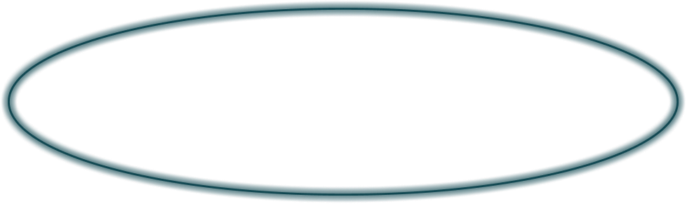
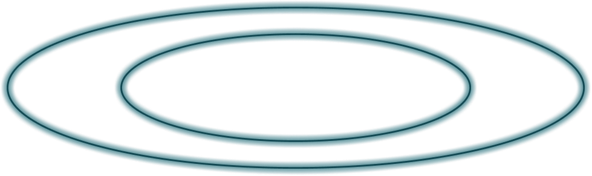
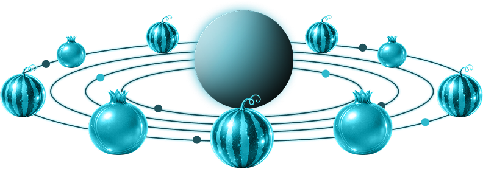
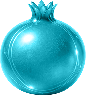

اگر آن ترک شیرازی به دست آرد دل ما را
به خال هندویش بخشم سمرقند و بخارا را
بده ساقی میِ باقی که در جنت نخواهی یافت
کنار آب رکنآباد و گلگشتِ مُصلّا را
تفسیر فال:
دل در تلاطم است و رازی در آستانهی آشکار شدن. با وجود آشفتگی، امید به گشایش و دیداری دوباره هست؛ اگر صبر کنی و دل به حرکت بسپاری. دل در تلاطم است و رازی در آستانهی آشکار شدن. با وجود آشفتگی، امید به گشایش و دیداری دوباره هست؛ اگر صبر کنی و دل به حرکت بسپاری.
